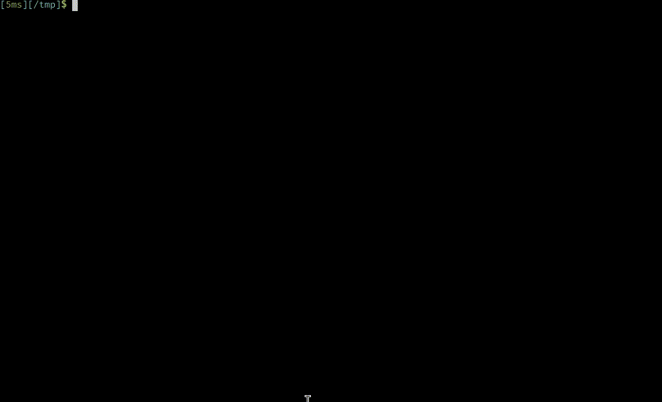

Intro
microvm.nix is a Flake to run lightweight NixOS virtual machines on NixOS and macOS. Starting with the reasons why for the remainder of this chapter, this handbook guides you through the provisioning of MicroVMs on your NixOS or macOS machine.
Compartmentalization
NixOS makes running services a breeze. Being able to quickly rollback configuration is a life-saver. Not so much however on systems that are shared by multiple services where maintenance of one affects others.
Increase stability by partitioning services into virtual NixOS systems that can be updated individually.
microvm.nix can isolate your /nix/store into exactly what is required for the guest’s NixOS: the root filesystem is a read-only erofs/squashfs file-systems that include only the binaries of your configuration. Of course, that holds only true until you mount the host’s /nix/store as a share for faster build times, or mount the store with a writable overlay for Nix builds inside the VM.
The Case Against Containers
Linux containers are not a single technology but a plethora of kernel features that serve to isolate various system resources so that the running system appears as one. It is still one shared Linux kernel with a huge attack surface.
Virtual machines on the other hand run their own OS kernel, reducing the attack surface to the hypervisor and its device drivers. The resource usage however incurs some overhead when compared with containers, with memory allocation being especially inflexible.
microvm.nix is a tool that helps you building the guest’s OS and
running it in ways that are easier than writing a Dockerfile, once
you know how to put a NixOS config into a flake.nix file.
Just Virtual Machines?
Full virtualization has been available for a long time with QEMU and VirtualBox. The MicroVM machine type highlights that virtualization overhead has been reduced a lot by replacing emulated devices with virtio interfaces that have been optimized for this environment.
This Flake offers you to run your MicroVMs not only on QEMU but with other Hypervisors that have been explicitly authored for virtio. Some of them are written in Rust, a programming language that is renowned for being safer than C. On macOS, vfkit leverages Apple’s native Virtualization.framework for running Linux VMs.
Declaring NixOS MicroVMs

microvm.nix creates virtual machine disk images and runner script
packages for the entries of the nixosConfigurations section of a
flake.nix file.
The microvm module
To add MicroVM functionality, a NixOS system configuration is
augmented by importing this flake’s nixosModule.microvm:
# Example flake.nix
{
inputs.nixpkgs.url = "github:nixos/nixpkgs/nixos-unstable";
inputs.microvm.url = "github:microvm-nix/microvm.nix";
inputs.microvm.inputs.nixpkgs.follows = "nixpkgs";
outputs = { self, nixpkgs, microvm }: {
# Example nixosConfigurations entry
nixosConfigurations.my-microvm = nixpkgs.lib.nixosSystem {
system = "x86_64-linux";
modules = [
# Include the microvm module
microvm.nixosModules.microvm
# Add more modules here
{
networking.hostName = "my-microvm";
microvm.hypervisor = "cloud-hypervisor";
}
];
};
};
}
To get you started quickly, a Flake template is included. Run nix flake init -t github:microvm-nix/microvm.nix in a new project directory.
Configuration options
By including the microvm module a set of NixOS options is made
available for customization. These are the most important ones:
| Option | Purpose |
|---|---|
microvm.hypervisor | Hypervisor to use by default in microvm.declaredRunner |
microvm.vcpu | Number of Virtual CPU cores |
microvm.mem | RAM allocation in MB |
microvm.interfaces | Network interfaces |
microvm.volumes | Block device images |
microvm.shares | Shared filesystem directories |
microvm.devices | PCI/USB devices for host-to-vm passthrough |
microvm.socket | Control socket for the Hypervisor so that a MicroVM can be shutdown cleanly |
microvm.user | (qemu only) User account which Qemu will switch to when started as root |
microvm.forwardPorts | (qemu user-networking only) TCP/UDP port forwarding |
microvm.vfkit.extraArgs | (vfkit only) Extra arguments to pass to vfkit |
microvm.vfkit.logLevel | (vfkit only) Log level: “debug”, “info”, or “error” (default: “info”) |
microvm.vfkit.rosetta.enable | (vfkit only) Enable Rosetta for running x86_64 binaries on ARM64 (Apple Silicon only) |
microvm.kernelParams | Like boot.kernelParams but will not end up in system.build.toplevel, saving you rebuilds |
microvm.storeOnDisk | Enables the store on the boot squashfs even in the presence of a share with the host’s /nix/store |
microvm.writableStoreOverlay | Optional string of the path where all writes to /nix/store should go to. |
See the options declarations for a full reference.
Network interfaces
Declare a MicroVM’s virtual network interfaces like this in its NixOS configuration:
{
microvm.interfaces = [ {
type = "tap";
# interface name on the host
id = "vm-a1";
# Ethernet address of the MicroVM's interface, not the host's
#
# Locally administered have one of 2/6/A/E in the second nibble.
mac = "02:00:00:00:00:01";
} ];
}
type = "user"
User-mode networking is provided by qemu, kvmtool, and vfkit, providing outgoing connectivity to your MicroVM without any further setup.
As kvmtool seems to lack a built-in DHCP server, additional static IP configuration is necessary inside the MicroVM.
Note: vfkit (macOS) only supports user-mode networking. TAP and bridge networking are not available.
type = "tap"
Use a virtual tuntap Ethernet interface. Its name is the value of
id.
Some Hypervisors may be able to automatically create these interfaces when running as root, which we advise against. Instead, create the interfaces before starting a MicroVM:
sudo ip tuntap add $IFACE_NAME mode tap user $USER
Note: add multi_queue to this command line if the VM is configured
with more than one CPU core.
When running MicroVMs through the host module, the tap network
interfaces are created through a systemd service dependency.
vhost-net acceleration
For high-throughput workloads, enable vhost-net to offload packet processing to the kernel instead of QEMU userspace:
{
microvm.interfaces = [ {
type = "tap";
id = "vm-a1";
mac = "02:00:00:00:00:01";
tap.vhost = true; # Enable vhost-net (~10 Gbps vs ~1.5 Gbps)
} ];
}
This requires the vhost_net kernel module on the host. The performance
improvement is significant for workloads with many concurrent connections
or high bandwidth requirements.
Note: Currently only supported with the qemu hypervisor.
Extend the generated script in the guest configuration like this:
microvm.binScripts.tap-up = lib.mkAfter ''
${lib.getExe' pkgs.iproute2 "ip"} link set dev 'vm-ixp-as11201p' master 'ixp-peering'
'';
type = "macvtap"
MACVTAP interfaces attach to a host’s physical network interface, joining the same Ethernet segment with a separate MAC address.
Before running a MicroVM interactively from a package, do the following steps manually:
# Parent interface:
LINK=eth0
# MACVTAP interface, as specified under microvm.interfaces.*.id:
ID=microvm1
# Create the interface
sudo ip l add link $LINK name $ID type macvtap mode bridge
# Obtain the interface index number
IFINDEX=$(cat /sys/class/net/$ID/ifindex)
# Grant yourself permission
sudo chown $USER /dev/tap$IFINDEX
When running MicroVMs through the host module, the macvtap network
interfaces are created through a systemd service dependency. Per
interface with type = "macvtap", a link attribute with the parent
interface, and mode attribute for the MACVTAP filtering mode must be
specified.
type = "bridge"
This mode lets qemu create a tap interface and attach it to a bridge.
The qemu-bridge-helper binary needs to be setup with the proper
permissions. See the host module for that. qemu will be run
without -sandbox on in order for this contraption to work.
Shares
Persistent file-systems are provided by both volumes and shares. Volumes are block devices inside the virtual machine, yielding fast performance but mounted file-systems require exclusive access. Shares allow mounting an arbitrary directory tree from the host.
In microvm.shares elements the proto field allows either of two
values:
-
9p(default) is built into many hypervisors, allowing you to quickly share a directory tree. Not supported by vfkit on macOS. -
virtiofsrequires a separate virtiofsd service which is started as a prerequisite when you start MicroVMs through a systemd service that comes with themicrovm.nixosModules.hostmodule.If you want to run from the command-line, start
bin/virtiofsd-runseparately.Expect
virtiofsto yield better performance over9p.Note: vfkit (macOS) has built-in virtiofs support and does not require a separate virtiofsd service.
microvm.shares = [ {
proto = "virtiofs";
tag = "home";
# Source path can be absolute or relative
# to /var/lib/microvms/$hostName
source = "home";
mountPoint = "/home";
} ];
-o xattr=sa -o acltype=posixacl
Sharing a host’s /nix/store
If a share with source = "/nix/store" is defined, size and build
time of the stage1 squashfs for /dev/vda will be reduced
drastically.
microvm.shares = [ {
tag = "ro-store";
source = "/nix/store";
mountPoint = "/nix/.ro-store";
} ];
Writable /nix/store overlay
An optional writable layer will be mounted if the path
microvm.writableStoreOverlay is set. Make sure that the path is
located on a writable filesystem.
Caveat: The Linux overlay filesystem is very picky about the filesystems that can be the upper (writable) layer. 9p/virtiofs shares don’t work currently, so resort to using a volume for that:
{ config, ... }:
{
microvm.writableStoreOverlay = "/nix/.rw-store";
microvm.volumes = [ {
image = "nix-store-overlay.img";
mountPoint = config.microvm.writableStoreOverlay;
size = 2048;
} ];
}
Device pass-through
PCI and USB pass-through is supported on some hypervisors. Permission
setup is automatic for declared "pci" devices, but manual for
"usb" devices.
Example PCI pass-through
Guest example:
microvm.devices = [ {
bus = "pci";
path = "0000:06:00.1";
} {
bus = "pci";
path = "0000:06:10.4";
} ];
Permission setup on the host is provided by systemd template unit
microvm-pci-devices@.service.
Example USB pass-through
In the guest
microvm.devices = [
# RTL2838UHIDIR
# Realtek Semiconductor Corp. RTL2838 DVB-T
{ bus = "usb"; path = "vendorid=0x0bda,productid=0x2838"; }
# Sonoff Zigbee 3.0 USB Dongle Plus
# Silicon Labs CP210x UART Bridge
{ bus = "usb"; path = "vendorid=0x10c4,productid=0xea60"; }
];
On the host
USB device paths are not directly translatable to udev rules. Setup permissions yourself:
services.udev.extraRules = ''
# RTL2838UHIDIR
# Realtek Semiconductor Corp. RTL2838 DVB-T
SUBSYSTEM=="usb", ATTR{idVendor}=="0bda", ATTR{idProduct}=="2838", GROUP="kvm"
# Sonoff Zigbee 3.0 USB Dongle Plus
# Silicon Labs CP210x UART Bridge
SUBSYSTEM=="usb", ATTR{idVendor}=="10c4", ATTR{idProduct}=="ea60", GROUP="kvm"
'';
CPU emulation
It’s possible to emulate a CPU if desired. This feature is only supported by the qemu hypervisor.
Note: this feature has a significant performance impact.
Defining an emulated NixOS system
You can call to nixpkgs.lib.nixosSystem, with the following key
settings:
-
Set the
systemattribute to the host system. -
A module that sets
nixpkgs.crossSystem.configto the guest system. This letsmicrovm.nixknow that it’s a cross-system environment. -
Set
microvm.hypervisortoqemu, given this is the only hypervisor that supports this feature. -
Set
microvm.cputo the desired emulated CPU. You can find a list of the available systems here.
# Example flake.nix
{
inputs = {
nixpkgs.url = "github:nixos/nixpkgs/nixos-unstable";
microvm = {
url = "github:microvm-nix/microvm.nix";
inputs.nixpkgs.follows = "nixpkgs";
};
};
outputs = { self, nixpkgs, microvm }: {
nixosConfigurations.emulated-dev = nixpkgs.lib.nixosSystem {
# host system
system = "x86_64-linux";
modules = let
guestSystem = "aarch64-unknown-linux-gnu";
# you can use packages in the guest machine with cross system configuration
pkgs = import nixpkgs {
system = "x86_64-linux";
crossSystem.config = guestSystem;
};
in [
microvm.nixosModules.microvm
{
nixpkgs.crossSystem.config = guestSystem;
microvm = {
# you can choose what CPU will be emulated by qemu
cpu = "cortex-a53";
hypervisor = "qemu";
};
environment.systemPackages = with pkgs; [ cowsay htop ];
services.getty.autologinUser = "root";
system.stateVersion = "24.11";
}
];
};
};
}
You can run the example with nix run .#nixosConfigurations.emulated-dev.config.microvm.declaredRunner.
As shown in this example, you can use system packages on the guest
system by using nixpkgs with a proper crossSystem configuration.
MicroVM output options
Hypervisor runners are provided in the config generated by a
nixosSystem for you to use inside and outside your configuration.
| Option | Purpose |
|---|---|
microvm.declaredRunner | Runner package selected according to microvm.hypervisor |
microvm.runners | Attribute set of runner packages per known Hypervisor. |
The microvm.declaredRunner selects the hypervisor according to the
configured microvm.hypervisor.
nix run .#nixosConfigurations.my-microvm.config.microvm.declaredRunner
The microvm.runners option provides a runner for each known
Hypervisor regardless of the microvm.hypervisor config setting. To
build my-microvm for Firecracker for example:
nix run .#nixosConfigurations.my-microvm.config.microvm.runners.firecracker
Configure microvm.hypervisor, use microvm.declaredRunner!
One of the microvm.runners is picked by microvm.declaredRunner by
evaluating microvm.hypervisor.
You may switch the Hypervisor quickly, but use declaredRunner in
production. Any other NixOS configuration that evaluates the
microvm.hypervisor option can be wrong when you pick from
microvm.runners directly. One example would be the defaults set by
microvm.optimize.
Using Rosetta with vfkit on Apple Silicon
Rosetta support enables running x86_64 (Intel) binaries in your ARM64 Linux VM on Apple Silicon Macs. This is useful for running legacy applications or development tools that haven’t been ported to ARM yet.
Requirements
- Apple Silicon (M1/M2/M3/etc.) Mac
- macOS with Rosetta installed
- vfkit hypervisor
Configuration
Enable Rosetta in your MicroVM configuration:
{
microvm = {
hypervisor = "vfkit";
vfkit.rosetta = {
enable = true;
# Optional: install Rosetta automatically if missing
install = true;
};
};
}
The NixOS module automatically handles mounting the Rosetta virtiofs share and configuring binfmt to use Rosetta for x86_64 binaries. No additional guest configuration is required.
Usage
Once configured, you can run any x86_64 binary in your ARM64 VM. To verify Rosetta is working:
# Add an x86_64 package to your configuration
environment.systemPackages = with pkgs; [
file # to verify binary architecture
pkgsCross.gnu64.hello # x86_64 version of hello
];
Then in the VM:
# Verify you're running on ARM64
uname -m
# Output: aarch64
# Check the binary architecture
file $(which hello)
# Output: ELF 64-bit LSB executable, x86-64, ...
# Run the x86_64 binary via Rosetta
hello
# Output: Hello, world!
You can use pkgsCross.gnu64.<package> to cross-compile any package from nixpkgs to x86_64 and run it via Rosetta.
Options Reference
| Option | Type | Default | Description |
|---|---|---|---|
microvm.vfkit.rosetta.enable | bool | false | Enable Rosetta support |
microvm.vfkit.rosetta.install | bool | false | Auto-install Rosetta if missing |
microvm.vfkit.rosetta.ignoreIfMissing | bool | false | Continue if Rosetta unavailable |
Limitations
- Only works on Apple Silicon Macs (M-series chips)
- vfkit will fail to start on Intel Macs if Rosetta is enabled
- Performance is slower than native ARM64 execution
- Not all x86_64 binaries may work perfectly
MicroVM options reference ⚙️
microvm.alioth.package
The alioth package to use.
Type: package
Default:
config.microvm.vmHostPackages.alioth
Declared by:
microvm.balloon
Whether to enable ballooning.
By “inflating” or increasing the balloon the host can reduce the VMs memory amount and reclaim it for itself. When “deflating” or decreasing the balloon the host can give the memory back to the VM.
virtio-mem is recommended over ballooning if supported by the hypervisor.
Type: boolean
Default:
false
Declared by:
microvm.binScripts
Script snippets that end up in the runner package’s bin/ directory
Type: attribute set of strings concatenated with “\n”
Default:
{ }
Declared by:
microvm.cloud-hypervisor.package
The cloud-hypervisor package to use.
Type: package
Default:
if config.microvm.graphics.enable then
config.microvm.vmHostPackages.cloud-hypervisor-graphics
else
config.microvm.vmHostPackages.cloud-hypervisor
Declared by:
microvm.cloud-hypervisor.extraArgs
Extra arguments to pass to cloud-hypervisor.
Type: list of string
Default:
[ ]
Declared by:
microvm.cloud-hypervisor.platformOEMStrings
Extra arguments to pass to cloud-hypervisor’s –platform oem_strings=[] argument.
All the oem strings will be concatenated with a comma (,) and wrapped in oem_string=[].
Do not include oem_string= or the [] brackets in the value.
The resulting string will be combined with any –platform options in
config.microvm.cloud-hypervisor.extraArgs and passed as a single
–platform option to cloud-hypervisor
Type: list of string
Default:
[ ]
Example:
[ "io.systemd.credential:APIKEY=supersecret" ]
Declared by:
microvm.cpu
What CPU to emulate, if any. If different from the host architecture, it will have a serious performance hit.
Note: Only supported with qemu.
Type: null or string
Default:
null
Declared by:
microvm.credentialFiles
Key-value pairs of credential files that will be loaded into the vm using systemd’s io.systemd.credential feature.
Type: attribute set of absolute path
Default:
{ }
Example:
{
SOPS_AGE_KEY = "/run/secrets/guest_microvm_age_key";
}
Declared by:
microvm.crosvm.package
The crosvm package to use.
Type: package
Default:
config.microvm.vmHostPackages.crosvm
Declared by:
microvm.crosvm.extraArgs
Extra arguments to pass to crosvm.
Type: list of string
Default:
[ ]
Declared by:
microvm.crosvm.pivotRoot
A Hypervisor’s sandbox directory
Type: null or string
Default:
null
Declared by:
microvm.declaredRunner
Generated Hypervisor declared by config.microvm.hypervisor
Type: package
Default:
"config.microvm.runner.${config.microvm.hypervisor}"
Declared by:
microvm.deflateOnOOM
Whether to enable automatic balloon deflation on out-of-memory.
Type: boolean
Default:
true
Declared by:
microvm.devices
PCI/USB devices that are passed from the host to the MicroVM
Type: list of (submodule)
Default:
[ ]
Example:
[ {
bus = "pci";
path = "0000:01:00.0";
} {
bus = "pci";
path = "0000:01:01.0";
deviceExtraArgs = "id=hostId,x-igd-opregion=on";
} {
# QEMU only
bus = "usb";
path = "vendorid=0xabcd,productid=0x0123";
} ]
Declared by:
microvm.devices.*.bus
Device is either on the pci or the usb bus
Type: one of “pci”, “usb”
Declared by:
microvm.devices.*.path
Identification of the device on its bus
Type: string
Declared by:
microvm.devices.*.qemu.bus
QEMU bus to which this device is attached (optional)
Type: null or string
Default:
null
Declared by:
microvm.devices.*.qemu.deviceExtraArgs
Device additional arguments (optional)
Type: null or string
Default:
null
Declared by:
microvm.devices.*.qemu.id
QEMU device identifier (optional)
Type: null or string
Default:
null
Declared by:
microvm.extraArgsScript
A script to provide additional arguments for the hypervisor at runtime.
The script must output a single line with arguments for the hypervisor.
Type: null or string
Default:
null
Declared by:
microvm.firecracker.package
The firecracker package to use.
Type: package
Default:
config.microvm.vmHostPackages.firecracker
Declared by:
microvm.firecracker.cpu
Custom CPU template passed to firecracker.
Type: null or (attribute set)
Default:
null
Declared by:
microvm.firecracker.driveIoEngine
Type of IO engine to use for Firecracker drives (disks).
Type: one of “Async”, “Sync”
Default:
"Async"
Declared by:
microvm.firecracker.extraArgs
Extra arguments to pass to firecracker.
Type: list of string
Default:
[ ]
Declared by:
microvm.firecracker.extraConfig
Extra config to merge into Firecracker JSON configuration
Type: open submodule of (JSON value)
Default:
{ }
Declared by:
microvm.forwardPorts
When using the SLiRP user networking (default), this option allows to forward ports to/from the host/guest.
Warning: If the NixOS firewall on the virtual machine is enabled, you also have to open the guest ports to enable the traffic between host and guest.
Note: Currently QEMU supports only IPv4 forwarding.
Type: list of (submodule)
Default:
[ ]
Example:
[ # forward local port 2222 -> 22, to ssh into the VM
{ from = "host"; host.port = 2222; guest.port = 22; }
# forward local port 80 -> 10.0.2.10:80 in the VLAN
{ from = "guest";
guest.address = "10.0.2.10"; guest.port = 80;
host.address = "127.0.0.1"; host.port = 80;
}
]
Declared by:
microvm.forwardPorts.*.from
Controls the direction in which the ports are mapped:
-
<literal>“host”</literal> means traffic from the host ports is forwarded to the given guest port.
-
<literal>“guest”</literal> means traffic from the guest ports is forwarded to the given host port.
Type: one of “host”, “guest”
Default:
"host"
Declared by:
microvm.forwardPorts.*.guest.address
The IPv4 address on the guest VLAN.
Type: string
Default:
""
Declared by:
microvm.forwardPorts.*.guest.port
The guest port to be mapped.
Type: 16 bit unsigned integer; between 0 and 65535 (both inclusive)
Declared by:
microvm.forwardPorts.*.host.address
The IPv4 address of the host.
Type: string
Default:
""
Declared by:
microvm.forwardPorts.*.host.port
The host port to be mapped.
Type: 16 bit unsigned integer; between 0 and 65535 (both inclusive)
Declared by:
microvm.forwardPorts.*.proto
The protocol to forward.
Type: one of “tcp”, “udp”
Default:
"tcp"
Declared by:
microvm.graphics.enable
Enable GUI support.
MicroVMs with graphics are intended for the interactive use-case. They cannot be started through systemd jobs.
The display backend is chosen by microvm.graphics.backend.
Type: boolean
Default:
false
Declared by:
microvm.graphics.backend
QEMU display backend to use when graphics.enable is true.
Defaults to cocoa on Darwin hosts and gtk otherwise.
Type: one of “gtk”, “cocoa”
Default:
if pkgs.stdenv.hostPlatform.isDarwin then "cocoa" else "gtk"
Declared by:
microvm.graphics.socket
Path of vhost-user socket
Type: string
Default:
"$HOSTNAME-gpu.sock"
Declared by:
microvm.guest.enable
Whether to enable the microvm.nix guest module at all.
Type: boolean
Default:
true
Declared by:
microvm.hotplugMem
Amount of hotplug memory in megabytes.
This describes the maximum amount of memory that can be dynamically added to the VM with virtio-mem.
Type: unsigned integer, meaning >=0
Default:
0
Declared by:
microvm.hotpluggedMem
Amount of hotplugged memory in megabytes.
This basically describes the amount of hotplug memory the VM starts with.
Type: unsigned integer, meaning >=0
Default:
0
Declared by:
microvm.hugepageMem
Whether to use hugepages as memory backend. (Currently only respected if using cloud-hypervisor)
Type: boolean
Default:
false
Declared by:
microvm.hypervisor
Which hypervisor to use for this MicroVM
Choose one of: qemu, cloud-hypervisor, firecracker, crosvm, kvmtool, stratovirt, alioth, vfkit
Type: one of “qemu”, “cloud-hypervisor”, “firecracker”, “crosvm”, “kvmtool”, “stratovirt”, “alioth”, “vfkit”
Default:
"qemu"
Declared by:
microvm.initialBalloonMem
Amount of initial balloon memory in megabytes.
Type: unsigned integer, meaning >=0
Default:
0
Declared by:
microvm.initrdPath
Path to the initrd file in the initrd package
Type: absolute path
Default:
"${config.system.build.initialRamdisk}/${config.system.boot.loader.initrdFile}"
Declared by:
microvm.interfaces
Network interfaces
Type: list of (submodule)
Default:
[ ]
Declared by:
microvm.interfaces.*.bridge
Attach network interface to host bridge interface for type = “bridge”
Type: null or string
Default:
null
Declared by:
microvm.interfaces.*.id
Interface name on the host
Type: string
Declared by:
microvm.interfaces.*.mac
MAC address of the guest’s network interface
Type: string
Declared by:
microvm.interfaces.*.macvtap.link
Attach network interface to host interface for type = “macvlan”
Type: string
Declared by:
microvm.interfaces.*.macvtap.mode
The MACVLAN mode to use
Type: one of “private”, “vepa”, “bridge”, “passthru”, “source”
Declared by:
microvm.interfaces.*.tap.vhost
Enable vhost-net for TAP interfaces.
When enabled, packet processing is offloaded to the kernel’s vhost-net module instead of QEMU userspace, significantly improving network throughput (~10 Gbps vs ~1.5 Gbps).
Requires the vhost_net kernel module on the host.
Type: boolean
Default:
false
Declared by:
microvm.interfaces.*.type
Interface type
Type: one of “user”, “tap”, “macvtap”, “bridge”
Declared by:
microvm.kernel
Kernel package to use for MicroVM runners. Better set boot.kernelPackages instead.
Type: package
Default:
"${config.boot.kernelPackages.kernel}"
Declared by:
microvm.kernelParams
Includes boot.kernelParams but doesn’t end up in toplevel, thereby allowing references to toplevel
Type: list of string
Declared by:
microvm.kvmtool.package
The kvmtool package to use.
Type: package
Default:
config.microvm.vmHostPackages.kvmtool
Declared by:
microvm.machineId
UUID for this MicroVM, used for:
- Registration with systemd-machined
- SMBIOS system UUID (QEMU only)
- Guest /etc/machine-id initialization when explicitly set
If null, a deterministic UUIDv5 is generated at runtime from the hostname for machined registration and SMBIOS UUID.
Format: 8-4-4-4-12 hex digits (standard UUID format).
Type: null or string
Default:
"ccbf04d5-5353-4282-6d8c-d5d99d40a171"
Example:
"a67472e5-570e-5c8a-b18c-ae3c77701050"
Declared by:
microvm.mem
Amount of RAM in megabytes
Type: positive integer, meaning >0
Default:
512
Declared by:
microvm.optimize.enable
Enables some optimizations by default to closure size and startup time:
- defaults documentation to off
- defaults to using systemd in initrd
- use systemd-networkd
- disables systemd-network-wait-online
- disables NixOS system switching if the host store is not mounted
This takes a few hundred MB off the closure size, including qemu, allowing for putting MicroVMs inside Docker containers.
Type: boolean
Default:
true
Declared by:
microvm.preStart
Commands to run before starting the hypervisor
Type: strings concatenated with “\n”
Default:
""
Declared by:
microvm.prettyProcnames
Set a recognizable process name right before executing the Hyperisor.
Type: boolean
Default:
true
Declared by:
microvm.qemu.package
The QEMU package to use.
Type: package
Default:
if config.microvm.cpu == null && config.microvm.vmHostPackages.stdenv.hostPlatform.isLinux then
# If no CPU is requested and the host is Linux, use qemu with KVM support (hardware-accelerated)
config.microvm.vmHostPackages.qemu_kvm
else
# Different CPU architectures like darwin or Non-Linux use the generic qemu package
config.microvm.vmHostPackages.qemu
Declared by:
microvm.qemu.extraArgs
Extra arguments to pass to qemu.
Type: list of string
Default:
[ ]
Declared by:
microvm.qemu.machine
QEMU machine model, eg. microvm, or q35
Get a full list with qemu-system-x86_64 -M help
This has a default declared with lib.mkDefault because it
depends on ${pkgs.system}.
Type: string
Declared by:
microvm.qemu.machineOpts
Overwrite the default machine model options.
Type: null or (attribute set of string)
Default:
null
Declared by:
microvm.qemu.pcieRootPorts
A list of PCIe root ports that can be used for hot-plugging PCIe devices. This is particularly useful on the Q35 machine type, which does not support hot-plugging on the base PCIe root bus (pcie.0). Creating root ports allows attaching and detaching PCIe devices at runtime and can also be useful for devices that require their own dedicated PCIe slot with a fixed address, etc. For additional details see the QEMU PCI Express Guidelines: https://gitlab.com/qemu-project/qemu/-/blob/master/docs/pcie.txt
Type: list of (submodule)
Default:
[ ]
Example:
[ {
bus = "pcie.0";
id = "pci_port_0";
chassis = 0;
} ]
Declared by:
microvm.qemu.pcieRootPorts.*.addr
PCIe address on the parent bus.
Type: null or string
Default:
null
Declared by:
microvm.qemu.pcieRootPorts.*.bus
The PCIe bus on which the root port will be created.
Type: null or string
Default:
null
Declared by:
microvm.qemu.pcieRootPorts.*.chassis
The chassis number associated with this PCIe root port.
Type: null or signed integer
Default:
null
Declared by:
microvm.qemu.pcieRootPorts.*.id
A unique identifier for this PCIe root port.
Type: string
Declared by:
microvm.qemu.pcieRootPorts.*.slot
PCIe slot number.
Type: null or string
Default:
null
Declared by:
microvm.qemu.serialConsole
Whether to enable the virtual serial console on qemu.
Type: boolean
Default:
true
Declared by:
microvm.registerClosure
Whether to enable Register system closure’s store paths in Nix db.
While enabled by default, this option may be incompatible with a persistent writable store overlay. .
Type: boolean
Default:
true
Example:
true
Declared by:
microvm.registerWithMachined
Register this MicroVM with systemd-machined on the host, enabling management via machinectl.
When enabled, a registration script is generated in the runner package. The host module will call this
script after the hypervisor starts. The VM is registered with class “vm” using the UUID from machineId
(or a deterministic UUID derived from hostname).
Supported machinectl commands:
list,status,show- VM visibilityterminate,kill- stop VM (will auto-restart if Restart=always)
Note: machinectl reboot stops the VM but won’t auto-restart it because systemd treats it as an
intentional stop. Use systemctl restart microvm@<name> for restarts.
Type: boolean
Default:
false
Declared by:
microvm.runner
Generated Hypervisor runner for this NixOS
Type: attribute set of package
Declared by:
microvm.shares
Shared directory trees
Type: list of (submodule)
Default:
[ ]
Declared by:
microvm.shares.*.mountPoint
Where to mount the share inside the container
Type: absolute path
Declared by:
microvm.shares.*.proto
Protocol for this share
Type: one of “9p”, “virtiofs”
Default:
"9p"
Declared by:
microvm.shares.*.readOnly
Turn off write access
Type: boolean
Default:
false
Declared by:
microvm.shares.*.securityModel
What security model to use for the shared directory
Type: one of “passthrough”, “none”, “mapped”, “mapped-file”
Default:
"none"
Declared by:
microvm.shares.*.socket
Socket for communication with virtiofs daemon
Type: null or string
Default:
null
Declared by:
microvm.shares.*.source
Path to shared directory tree
Type: non-empty string
Declared by:
microvm.shares.*.tag
Unique virtiofs daemon tag
Type: string
Declared by:
microvm.socket
Hypervisor control socket path
Type: null or string
Default:
"${hostName}.sock"
Declared by:
microvm.storeDiskErofsFlags
Flags to pass to mkfs.erofs
Omit "-Efragments" and "-Ededupe" to enable multi-threading.
Type: list of string
Default:
[ "-zlz4hc" ]
++ lib.optional (kernelAtLeast "5.16") "-Eztailpacking"
++ lib.optionals (kernelAtLeast "6.1") [
"-Efragments"
"-Ededupe"
]
Declared by:
microvm.storeDiskSquashfsFlags
Flags to pass to gensquashfs
Type: list of string
Default:
[
"-c"
"zstd"
"-j"
"$NIX_BUILD_CORES"
]
Declared by:
microvm.storeDiskType
Boot disk file system type: squashfs is smaller, erofs is supposed to be faster.
Defaults to erofs, unless the NixOS hardened profile is detected.
Type: one of “squashfs”, “erofs”
Declared by:
microvm.storeOnDisk
Whether to boot with the storeDisk, that is, unless the host’s /nix/store is a microvm.share.
Type: boolean
Default:
true
Declared by:
microvm.stratovirt.package
The stratovirt package to use.
Type: package
Default:
config.microvm.vmHostPackages.stratovirt
Declared by:
microvm.systemSymlink
Whether to inclcude a symlink of config.system.build.toplevel to share/microvm/system.
This is required for commands like microvm -l to function but removes reference to the uncompressed store content when using a disk image for the nix store.
Type: boolean
Default:
false
Declared by:
microvm.user
User to switch to when started as root
Type: null or string
Default:
null
Declared by:
microvm.vcpu
Number of virtual CPU cores
Type: positive integer, meaning >0
Default:
1
Declared by:
microvm.vfkit.package
The vfkit package to use.
Type: package
Default:
config.microvm.vmHostPackages.vfkit
Declared by:
microvm.vfkit.extraArgs
Extra arguments to pass to vfkit.
Type: list of string
Default:
[ ]
Declared by:
microvm.vfkit.logLevel
vfkit log level.
Type: null or one of “debug”, “info”, “error”
Default:
"info"
Declared by:
microvm.vfkit.rosetta.enable
Enable Rosetta support for running x86_64 binaries in ARM64 Linux VMs. Only works on Apple Silicon (ARM) Macs.
When enabled, the Rosetta virtiofs share will be automatically mounted and binfmt will be configured to use Rosetta for x86_64 binaries.
Type: boolean
Default:
false
Declared by:
microvm.vfkit.rosetta.ignoreIfMissing
Continue execution even if Rosetta installation fails or is unavailable. Useful for configurations that should work on both ARM and Intel Macs.
Type: boolean
Default:
false
Declared by:
microvm.vfkit.rosetta.install
Automatically install Rosetta if missing. If false and Rosetta is not installed, vfkit will fail to start.
Type: boolean
Default:
false
Declared by:
microvm.virtiofsd.package
The virtiofsd package to use.
Type: package
Default:
config.microvm.vmHostPackages.virtiofsd
Declared by:
microvm.virtiofsd.extraArgs
Extra command-line switch to pass to virtiofsd.
Type: list of string
Default:
[ ]
Declared by:
microvm.virtiofsd.group
The name of the group that will own the Unix domain socket file that virtiofsd creates for communication with the hypervisor. If null, the socket will have group ownership of the user running the hypervisor.
Type: null or string
Default:
"kvm"
Declared by:
microvm.virtiofsd.inodeFileHandles
When to use file handles to reference inodes instead of O_PATH file descriptors (never, prefer, mandatory)
Allows you to overwrite default behavior in case you hit “too many open files” on eg. ZFS. https://gitlab.com/virtio-fs/virtiofsd/-/issues/121
Type: null or one of “never”, “prefer”, “mandatory”
Default:
"prefer"
Declared by:
microvm.virtiofsd.threadPoolSize
The amounts of threads virtiofsd should spawn. This option also takes the special
string \nproc`` which spawns as many threads as the host has cores.
Type: string or (unsigned integer, meaning >=0)
Default:
"`nproc`"
Declared by:
microvm.vmHostPackages
If set, overrides the default host package.
Type: Nixpkgs package set
Default:
if config.microvm.cpu == null then pkgs else pkgs.buildPackages
Example:
"nixpkgs.legacyPackages.aarch64-darwin.pkgs"
Declared by:
microvm.volumes
Disk images
Type: list of (submodule)
Default:
[ ]
Declared by:
microvm.volumes.*.autoCreate
Created image on host automatically before start?
Type: boolean
Default:
true
Declared by:
microvm.volumes.*.direct
Whether to set O_DIRECT on the disk.
Type: boolean
Default:
false
Declared by:
microvm.volumes.*.fsType
Filesystem for automatic creation and mounting
Type: string
Default:
"ext4"
Declared by:
microvm.volumes.*.image
Path to disk image on the host
Type: string
Declared by:
microvm.volumes.*.imageType
Format of the image (only passed to the hypervisor, does not change format of the image created if autoCreate is true).
Note: Only supported with cloud-hypervisor.
Type: one of “raw”, “qcow2”, “vhd”, “vhdx”
Default:
"raw"
Declared by:
microvm.volumes.*.label
Label of the volume, if any. Only applicable if autoCreate is true; otherwise labeling of the volume must be done manually
Type: null or string
Default:
null
Declared by:
microvm.volumes.*.mkfsExtraArgs
Set extra Filesystem creation parameters
Type: list of string
Default:
[ ]
Declared by:
microvm.volumes.*.mountPoint
If and where to mount the volume inside the container
Type: null or absolute path
Declared by:
microvm.volumes.*.readOnly
Turn off write access
Type: boolean
Default:
false
Declared by:
microvm.volumes.*.serial
User-configured serial number for the disk
Type: null or string
Default:
null
Declared by:
microvm.volumes.*.size
Volume size (in MiB) if created automatically
Type: signed integer
Declared by:
microvm.vsock.cid
Virtual Machine address; setting it enables AF_VSOCK
The following are reserved:
- 0: Hypervisor
- 1: Loopback
- 2: Host
Type: null or signed integer
Default:
null
Declared by:
microvm.writableStoreOverlay
Path to the writable /nix/store overlay.
If set to a filesystem path, the initrd will mount /nix/store as an overlay filesystem consisting of the read-only part as a host share or from the built storeDisk, and this configuration option as the writable overlay part. This allows you to build nix derivations inside the VM.
Make sure that the path points to a writable filesystem (tmpfs, volume, or share).
Type: null or string
Default:
null
Example:
"/nix/.rw-store"
Declared by:
Running a MicroVM as a package
Quickly running a MicroVM interactively is great for testing. You get to interact with its console.
There are drawbacks: no preparation for TAP network interfaces is done
and no virtiofsd is started. These can be worked around by relying on
9p shares and using qemu’s host network interfaces.
Immediately running a nixosConfiguration
To run a nixosConfiguration off your Flake directly use:
nix run .#nixosConfigurations.my-microvm.config.microvm.declaredRunner
Add a runner package to your Flake
To add this runner permanently add a package like this to the outputs
of your flake.nix:
packages.x86_64-linux.my-microvm = self.nixosConfigurations.my-microvm.config.microvm.declaredRunner;
You can then run the MicroVM with a simple nix run .#my-microvm
Preparing a NixOS host for declarative MicroVMs
microvm.nix adds the following configuration for servers to host MicroVMs reliably:
- a
/var/lib/microvmsstate directory with one subdirectory per MicroVM - systemd services
microvm-tap-interfaces@to setup TAP network interfaces - systemd services
microvm-virtiofsd@to start virtiofsd instances - systemd services
microvm@to start a MicroVM - configuration options to declaratively build MicroVMs with the host system
- tools to manage MicroVMs imperatively
Prepare your host by including the microvm.nix host nixosModule:
# Your server's flake.nix
{
inputs.nixpkgs.url = "github:nixos/nixpkgs/nixos-unstable";
inputs.microvm.url = "github:microvm-nix/microvm.nix";
inputs.microvm.inputs.nixpkgs.follows = "nixpkgs";
outputs = { self, nixpkgs, microvm }: {
# Example nixosConfigurations entry
nixosConfigurations.server1 = nixpkgs.lib.nixosSystem {
system = "x86_64-linux";
modules = [
# Include the microvm host module
microvm.nixosModules.host
# Add more modules here
{
networking.hostName = "server1";
# try to automatically start these MicroVMs on bootup
microvm.autostart = [
"my-microvm"
"your-microvm"
"their-microvm"
];
}
];
};
};
}
Preparing a non-Flakes host
If you really cannot migrate to Flakes easily, just import the host
module directly in your NixOS configuration:
imports = [ (builtins.fetchGit {
url = "https://github.com/microvm-nix/microvm.nix";
} + "/nixos-modules/host") ];
A simple network setup
While networking infrastructure is out of scope for the microvm.nix flake, here is some guidance for providing the MicroVMs on your NixOS machine with internet access.
Use this for your local LAN where IP addresses are free and plentiful. If not, head over to the advanced networking page.
Because we already use systemd for MicroVM startup, let’s pick
systemd-networkd:
networking.useNetworkd = true;
A bridge to link TAP interfaces
To make your MicroVM reachable, the host will place its Ethernet port (eno1)
on a bridge (br0). This bridge will have the MicroVM’s TAP interface attached
to it - directly placing the MicroVM on your local network.
Note that the addresses provided below are examples and you must adjust these
for your network settings. Also note that the eno1 must be attached to the
bridge with the vm-* TAP interfaces that you will specify in the MicroVM
definition.
systemd.network.enable = true;
systemd.network.networks."10-lan" = {
matchConfig.Name = ["eno1" "vm-*"];
networkConfig = {
Bridge = "br0";
};
};
systemd.network.netdevs."br0" = {
netdevConfig = {
Name = "br0";
Kind = "bridge";
};
};
systemd.network.networks."10-lan-bridge" = {
matchConfig.Name = "br0";
networkConfig = {
Address = ["192.168.1.2/24" "2001:db8::a/64"];
Gateway = "192.168.1.1";
DNS = ["192.168.1.1"];
IPv6AcceptRA = true;
};
linkConfig.RequiredForOnline = "routable";
};
Now that the host is configured, you can define a MicroVM to have a static IP address with:
microvm = {
#...add additional MicroVM configuration here
interfaces = [
{
type = "tap";
id = "vm-test1";
mac = "02:00:00:00:00:01";
}
];
};
systemd.network.enable = true;
systemd.network.networks."20-lan" = {
matchConfig.Type = "ether";
networkConfig = {
Address = ["192.168.1.3/24" "2001:db8::b/64"];
Gateway = "192.168.1.1";
DNS = ["192.168.1.1"];
IPv6AcceptRA = true;
DHCP = "no";
};
};
Docker and systemd-network
If you use the above systemd.network bridge config and wish to run
Docker containers inside your microvms using virtualisation.docker,
you may need to add the following snippet to stop systemd-networkd from
managing the bridged veth* interfaces Docker creates for each container.
Without this, network access inside the containers will be broken.
systemd.network.networks."19-docker" = {
matchConfig.Name = "veth*";
linkConfig = {
Unmanaged = true;
};
};
Advanced: Improving Performance
If you prioritize network performance over inter-VM communication on the virtual bridge, have a look into these alternatives:
-
Network interfaces with
type = "macvtap"are supported in microvm.nix. While they’re technically tap devices, they attach to an external Ethernet port, eliminating thebr0bridge. -
Server Ethernet cards support SR-IOV: setup Virtual Function devices for PCI passthru into MicroVMs.
Advanced network setup
Renting a server in a datacenter usually gets you one IP address. You must not bridge your local VM traffic together with the physical Ethernet uplink port. Instead, setup a host-internal bridge for the Virtual Machines, and provide them with Internet through NAT just like your plastic ADSL router at home.
A bridge to link TAP interfaces
Instead of placing MicroVMs directly on a LAN, one can also use a TAP interface to get a virtual Ethernet interface on the host. Although it is possible to assign individual IP configuration to these individual interfaces, let us avoid the additional configuration effort and create a bridge instead:
systemd.network.netdevs."10-microvm".netdevConfig = {
Kind = "bridge";
Name = "microvm";
};
systemd.network.networks."10-microvm" = {
matchConfig.Name = "microvm";
networkConfig = {
DHCPServer = true;
IPv6SendRA = true;
};
addresses = [ {
addressConfig.Address = "10.0.0.1/24";
} {
addressConfig.Address = "fd12:3456:789a::1/64";
} ];
ipv6Prefixes = [ {
ipv6PrefixConfig.Prefix = "fd12:3456:789a::/64";
} ];
};
# Allow inbound traffic for the DHCP server
networking.firewall.allowedUDPPorts = [ 67 ];
This configuration will hand out IP addresses to clients on the bridge. In practise, better leave out the DHCP server and its state by opting for declarative, versioned configuration instead.
Last, the TAP interfaces of MicroVMs shall be attached to this central
bridge. Make sure your matchConfig matches just the interfaces you
want!
systemd.network.networks."11-microvm" = {
matchConfig.Name = "vm-*";
# Attach to the bridge that was configured above
networkConfig.Bridge = "microvm";
};
Provide Internet Access with NAT
IPv4 addresses are exhausted. It is a very common case that you get one public IPv4 address for your machine. The solution is to route your internal virtual machines with Network Address Translation.
You might not get a dedicated /64 IPv6 prefix to route to your MicroVMs. NAT works for this address family, too!
networking.nat = {
enable = true;
# NAT66 exists and works. But if you have a proper subnet in
# 2000::/3 you should route that and remove this setting:
enableIPv6 = true;
# Change this to the interface with upstream Internet access
externalInterface = "eth0";
# The bridge where you want to provide Internet access
internalInterfaces = [ "microvm" ];
};
Check out
networking.nat.forwardPorts
to make your MicroVM’s services available to networks outside your
host!
Port forwarding
Isolating your public Internet services is a great use-case for virtualization. But how does traffic get to you when your MicroVMs have private IP addresses behind NAT?
NixOS has got you covered with the networking.nat.forwardPorts
option! This example forwards TCP ports 80 (HTTP) and 443 (HTTPS) to
other hosts:
networking.nat = {
enable = true;
forwardPorts = [ {
proto = "tcp";
sourcePort = 80;
destination = my-addresses.http-reverse-proxy.ip4;
} {
proto = "tcp";
sourcePort = 443;
destination = my-addresses.https-reverse-proxy.ip4;
} ];
};
Routed network setup
Motivation
In bridged setups the Virtual Machines share the same Ethernet segment. A compromised VM still has raw network access, allowing it to send a lot of funny packets that cause problems for other VMs. Examples:
- Forging MAC addresses
- Running rogue DHCP servers
- ARP/NDP spoofing
- Meddling with link-local multicast
This can be avoided by unsharing the Ethernet segments, ie. removing the bridge.
Addressing
Compared to one Ethernet where we assign a large subnet like
10.0.0.0/24, we will now only deal with Host Routes where the
prefix length is /32 for IPv4 and /128 for IPv6. Note that by
doing this we no longer lose precious space to a subnet’s network and
broadcast addresses.
Host configuration
Using systemd-networkd, a VM’s tap interface is configured with static
addresses and the corresponding host routes. We do this for up to
maxVMs. Increasing this number will create as many .network
configuration files, so it’s relatively cheap.
{ lib, ... }:
let
maxVMs = 64;
in
{
networking.useNetworkd = true;
systemd.network.networks = builtins.listToAttrs (
map (index: {
name = "30-vm${toString index}";
value = {
matchConfig.Name = "vm${toString index}";
# Host's addresses
address = [
"10.0.0.0/32"
"fec0::/128"
];
# Setup routes to the VM
routes = [ {
Destination = "10.0.0.${toString index}/32";
} {
Destination = "fec0::${lib.toHexString index}/128";
} ];
# Enable routing
networkConfig = {
IPv4Forwarding = true;
IPv6Forwarding = true;
};
};
}) (lib.genList (i: i + 1) maxVMs)
);
}
NAT
For NAT configuration on the host we’re not going to specify each potential tap interface. That would create a lot of firewall rules. To avoid this additional complexity, use a single subnet that matches all your VMs’ addresses:
{
networking.nat = {
enable = true;
internalIPs = [ "10.0.0.0/24" ];
# Change this to the interface with upstream Internet access
externalInterface = "enp0s3";
};
}
Virtual Machine configuration
We no longer rely on DHCP for this non-standard setup. To produce IPv4
and IPv6 addresses let’s assign a number index to each MicroVM. Make
sure that this number is not reused by two VMs!
We suggest creating some sort of central configuration file that
contains each VM’s network index in one place. That should make
reuses obvious. If that list becomes too long, write a NixOS
assertion!
{ lib, ... }:
let
# Change this by VM!
index = 5;
mac = "00:00:00:00:00:01";
in
{
microvm.interfaces = [ {
id = "vm${toString index}";
type = "tap";
inherit mac;
} ];
networking.useNetworkd = true;
systemd.network.networks."10-eth" = {
matchConfig.MACAddress = mac;
# Static IP configuration
address = [
"10.0.0.${toString index}/32"
"fec0::${lib.toHexString index}/128"
];
routes = [ {
# A route to the host
Destination = "10.0.0.0/32";
GatewayOnLink = true;
} {
# Default route
Destination = "0.0.0.0/0";
Gateway = "10.0.0.0";
GatewayOnLink = true;
} {
# Default route
Destination = "::/0";
Gateway = "fec0::";
GatewayOnLink = true;
} ];
networkConfig = {
# DNS servers no longer come from DHCP nor Router
# Advertisements. Perhaps you want to change the defaults:
DNS = [
# Quad9.net
"9.9.9.9"
"149.112.112.112"
"2620:fe::fe"
"2620:fe::9"
];
};
};
}
systemd services on a MicroVM host
The host nixosModule provides a few systemd services for additional
bringup which is not available when running a MicroVM interactively
from a package.
install-microvm-${name}.service
Creates and prepares a subdirectory under /var/lib/microvms for
declarative MicroVMs according to the
microvm.vms option.
If the MicroVM subdirectory under /var/lib/microvms already exists,
and the MicroVM is configured to be built from a flake’s
nixosConfigurations, this systemd unit will be skipped. The reason
for this behavior is that it is easier to update with the microvm
command instead of restarting all virtual
machines on a host when doing nixos-rebuild switch.
microvm-tap-interfaces@.service
Creates TAP virtual network interfaces for the user that will run MicroVMs.
microvm-macvtap-interfaces@.service
Creates MACVTAP virtual network interfaces for the user that will run MicroVMs.
microvm-pci-devices@.service
Prepares PCI devices for passthrough (VFIO).
microvm-virtiofsd@.service
Starts a fleet of virtiofsd servers, one for each virtiofs
mountpoint in microvm.shares.
microvm@.service
Runs the actual MicroVM through
/var/lib/microvms/%i/current/bin/microvm-run where %i is the
MicroVM name.
microvms.target
Depends on the microvm@.service instance for all configured
microvm.autostart.
Host options reference ⚙️
microvm.autostart
MicroVMs to start by default.
This includes declarative config.microvm.vms as well as MicroVMs that are managed through the microvm command.
Type: list of string
Default:
[ ]
Declared by:
microvm.host.enable
Whether to enable the microvm.nix host module.
Type: boolean
Default:
true
Declared by:
microvm.host.startupTimeout
Start up timeout for the VMs in seconds
Type: positive integer, meaning >0
Default:
150
Declared by:
microvm.host.useNotifySockets
Enable if all your MicroVMs run with a Hypervisor that sends readiness notification over a VSOCK.
Danger! If one of your MicroVMs doesn’t do this, its systemd service will not start up successfully!
Type: boolean
Default:
false
Declared by:
microvm.stateDir
Directory that contains the MicroVMs
Type: absolute path
Default:
"/var/lib/microvms"
Declared by:
microvm.vms
The MicroVMs that shall be built declaratively with the host NixOS.
Type: attribute set of (submodule)
Default:
{ }
Declared by:
microvm.vms.<name>.autostart
Add this MicroVM to config.microvm.autostart?
Type: boolean
Default:
true
Declared by:
microvm.vms.<name>.config
A specification of the desired configuration of this MicroVM, as a NixOS module, for building without a flake.
Type: null or (Toplevel NixOS config)
Default:
null
Declared by:
microvm.vms.<name>.evaluatedConfig
An already evaluated configuration of this MicroVM. Allows supplying an already evaluated configuration or an alternative configuration evaluation function instead of NixOS’s default eval-config.
Type: null or unspecified value
Default:
null
Declared by:
microvm.vms.<name>.extraModules
This option is only respected when config is specified.
A list of additional NixOS modules to be merged into the MicroVM’s system configuration.
Type: list of module
Default:
[
flakeInputs.some-project.nixosModules.example
flakeInputs.another-project.nixosModules.default
]
Declared by:
microvm.vms.<name>.flake
Source flake for declarative build
Type: null or absolute path
Default:
flakeInputs.my-infra
Declared by:
microvm.vms.<name>.nixpkgs
This option is only respected when config is
specified.
The nixpkgs path to use for the MicroVM. Defaults to the host’s nixpkgs.
Type: absolute path
Default:
pkgs.path
Declared by:
microvm.vms.<name>.pkgs
This option is only respected when config is specified.
The package set to use for the MicroVM. Must be a nixpkgs package set with the microvm overlay. Determines the system of the MicroVM.
If set to null, a new package set will be instantiated.
Type: null or unspecified value
Default:
pkgs
Declared by:
microvm.vms.<name>.restartIfChanged
Restart this MicroVM’s services if the systemd units are changed, i.e. if it has been updated by rebuilding the host.
Defaults to true for fully-declarative MicroVMs.
Type: boolean
Default:
false
Declared by:
microvm.vms.<name>.specialArgs
This option is only respected when config is specified.
A set of special arguments to be passed to NixOS modules.
This will be merged into the specialArgs used to evaluate
the NixOS configurations.
Type: attribute set of unspecified value
Default:
{ }
Declared by:
microvm.vms.<name>.updateFlake
Source flakeref to store for later imperative update
Type: null or string
Default:
"git+file:///home/user/my-infra"
Declared by:
Declarative MicroVMs
Provided your NixOS host includes the host nixosModule, options are declared to build a MicroVM together with the host. You can choose whether your MicroVMs should be managed in a fully-declarative way, or whether your only want the initial deployment be declarative (with subsequent imperative updates using the microvm command).
microvm.nix distinguishes between fully-declarative configurations
and declarative deployment by allowing you to specify either
a full config or just a flake respectively.
Fully declarative
You can create fully declarative VMs by directly defining their nixos system configuration in-place. This is very similar to how nixos-containers work if you are familiar with those.
# microvm refers to microvm.nixosModules
{ microvm, ... }: {
imports = [ microvm.host ];
microvm.vms = {
my-microvm = {
# The package set to use for the microvm. This also determines the microvm's architecture.
# Defaults to the host system's package set if not given.
pkgs = import nixpkgs { system = "x86_64-linux"; };
# (Optional) A set of special arguments to be passed to the MicroVM's NixOS modules.
#specialArgs = {};
# The configuration for the MicroVM.
# Multiple definitions will be merged as expected.
config = {
# It is highly recommended to share the host's nix-store
# with the VMs to prevent building huge images.
microvm.shares = [{
source = "/nix/store";
mountPoint = "/nix/.ro-store";
tag = "ro-store";
proto = "virtiofs";
}];
# Any other configuration for your MicroVM
# [...]
};
};
};
}
Declarative deployment
Why deployed? The per-MicroVM subdirectory under /var/lib/microvms
is only created if it did not exist before. This behavior is
intended to ensure existence of MicroVMs that are critical to
operation. To update them later you will have to use the imperative microvm
command.
microvm.vms = {
my-microvm = {
# Host build-time reference to where the MicroVM NixOS is defined
# under nixosConfigurations
flake = self;
# Specify from where to let `microvm -u` update later on
updateFlake = "git+file:///etc/nixos";
};
};
Note that building MicroVMs with the host increases build time and closure size of the host’s system.
Imperative MicroVM management with the microvm command
Compartmentalizing services in an infrastructure landscape allows us to
conduct maintenance individually and without affecting unrelated
MicroVMs. The microvm command helps with that.
Create a MicroVM
You can specify this MicroVM’s source flake with -f. If omitted, the
tool will assume git+file:///etc/nixos. The source flakeref will be
kept in /var/lib/microvms/*/flake for future updating the MicroVM.
microvm -f git+https://... -c my-microvm
Enabling MicroVM autostart
Extension of the host’s systemd units must happen declaratively in the host’s NixOS configuration:
microvm.autostart = [
"myvm1"
"myvm2"
"myvm3"
];
Update a MicroVM
Updating does not refresh your packages but simply rebuilds the
MicroVM. Use nix flake update to get new package versions.
microvm -u my-microvm
Until ways have been found to safely transfer the profile into the target /nix/store, and subsequently activate it, you must restart the MicroVM for the update to take effect.
Use the -R flag to automatically restart if an update was built.
List MicroVMs
Listing your MicroVMs is as trivial as ls -1 /var/lib/microvms
For more insight, the following command will read the current system version of all MicroVMs and compare them to what the corresponding flake evaluates. It is therefore quite slow to run, yet very useful for an updatable VM overview.
microvm -l
If you want a faster overview of booted and current versions, run this instead:
ls -l /var/lib/microvms/*/{current,booted}/share/microvm/system
Removing MicroVMs
First, stop the MicroVM:
systemctl stop microvm@$NAME
If you don’t use absolute filesystem paths for sockets, volumes, or
shares, all MicroVM state is kept under /var/lib/microvms/$NAME/.
The microvm@.serivce systemd service template depends on existence
of this directory.
rm -rf /var/lib/microvms/$NAME
Deploying via SSH
By running either from packages or through systemd services microvm.nix tries to support a wholesome Nix workflow: develop and test on your local laptop, then deploy to staging and later to production.
Let’s explore alternative ways before detailing our elaboration:
- You could build
.#nixosConfiguration.my-microvm.config.microvm.declaredRunnerlocally, thennix copyit to the target host for installation. This comes at the expense of your laptop’s battery time and it can also become quite network-heavy. - You may transfer each change to the remote host to build entirely
remote. There you’re going to have a repository state that is going
to confuse fellow operators. Also, your local
--override-inputparameters will become meaningless on the remote filesystem.
microvm.deploy.rebuild
The easy interface that is named after nixos-rebuild combines the
two scripts that are described below:
- First, we evaluate locally and build remotely with
microvm.deploy.installOnHost - Depending on whether the host’s
/nix/storeis mounted and SSH is running in the MicroVM:- We either run
microvm.deploy.sshSwitchas described below - Alternatively, we restart the MicroVM’s systemd service on the host
- We either run
Because it needs to know about both the host and the MicroVM, these
ssh addresses must come before the actual switch argument:
nix run .#nixosConfigurations.my-microvm.config.microvm.deploy.rebuild root@example.com root@my-microvm.example.com switch
microvm.deploy.installOnHost
This script will evaluate only the system’s derivations locally. It then transfers these and their dependencies to the remote system so the actual build can be performed there.
Just like the microvm command, it then installs
the MicroVM under /var/lib/microvms/$NAME so that the systemd
services of the host module can pick it up.
It is irrelevant whether you create a new MicroVM or update an existing one.
microvm.deploy.sshSwitch
Once the host has an updated MicroVM in its /nix/store (see above)
the new system must be activated. For a proper state, this script does
a bit more in the MicroVM than just switch-to-configuration:
- First, the
config.networking.hostNameis compared to the running system for safety reasons. - The Nix database registration will be imported which is important if
you build packages into a
microvm.writableStoreOverlay. - The new system is installed into
/nix/var/nix/profiles/systemwhich is optional but expected by some Nix tooling. - Finally, run
switch-to-configurationwith the provided parameter (eg.switch).
Conventions between MicroVM packages and the host
This section describes the interface that is used to run MicroVM
packages with the flake’s host module. While the microvm.nix
flake was designed for single-server usage, you can build different
MicroVM deployments using the information on this page.
nixosModule.microvm option | MicroVM package file | nixosModules.host systemd service | Description |
|---|---|---|---|
microvm.hypervisor | bin/microvm-run | microvm@.service | Start script for the main MicroVM process |
microvm.hypervisor | bin/microvm-shutdown | microvm@.service | Script for graceful shutdown of the MicroVM (i.e. triggering the power button) |
microvm.interfaces.*.id | share/microvm/tap-interfaces | microvm-tap-interfaces@.service | Names of the tap network interfaces to setup for the proper user |
microvm.devices.*.path | share/microvm/pci-devices | microvm-pci-devices@.service | PCI devices that must be bound to the vfio-pci driver on the host |
microvm.shares.*.source | share/microvm/virtiofs/${tag}/source | microvm-virtiofsd@.service | Source directory of a virtiofs instance by tag |
microvm.shares.*.socket | share/microvm/virtiofs/${tag}/socket | microvm-virtiofsd@.service | virtiofsd socket path by tag |
microvm.systemSymlink | share/microvm/system | config.system.build.toplevel symlink, used for comparing versions when running microvm -l |
Generating custom operating system hypervisor packages
Because a microvm.nix runner package completely defines how to run the Hypervisor, it is possible to define independent packages that virtualize other operating systems than NixOS.
-
Your NixOS configurations should export their runner package as
config.microvm.declaredRunnerso that it can be picked up either as declarative MicroVMs or by the microvm command. -
The runner package must have a file layout as described in the table above.
microvm-solo5-spt is an example of a Flake that can run on a microvm.nix host.
Frequently Asked Questions
Are there elaborate example setups?
microvm.nix is used in these open-source infrastructure projects:
Let us know if you know more!
Can I support the development and maintenance of this project?
How to centralize logging with journald?
That is possible without even requiring a network transport by just
making the journals available to the host as a share. Because journald
identifies hosts by their /etc/machine-id, the microvm.machineId should be set.
microvm.shares = [ {
# On the host
source = "/var/lib/microvms/${config.networking.hostName}/journal";
# In the MicroVM
mountPoint = "/var/log/journal";
tag = "journal";
proto = "virtiofs";
socket = "journal.sock";
} ];
Last, make the MicroVM journals available to your host. The
machine-id must be available.
systemd.tmpfiles.rules = map (vmHost:
let
machineId = self.lib.addresses.machineId.${vmHost};
in
# creates a symlink of each MicroVM's journal under the host's /var/log/journal
"L+ /var/log/journal/${machineId} - - - - /var/lib/microvms/${vmHost}/journal/${machineId}"
) (builtins.attrNames self.lib.addresses.machineId);
Once your MicroVM’s journal data is visible in the
/var/log/journal/$machineId/ directories, journalctl can pick it
up using the -m/--merge switch.
Can I build with hypervisors from the host’s nixpkgs instead of the MicroVM’s?
Yes. This scenario is enabled through the flake’s lib.buildRunner
function. See the nix run microvm#build-microvm
script that you will need to customize to fit your deployment scenario.
How can I deploy imperatively from Continuous Integration?
Do this by integrating into your automation what the microvm command
does.
environment.systemPackages = [ (
# Provide a manual updating script that fetches the latest
# updated+built system from Hydra
pkgs.writeShellScriptBin "update-microvm" ''
if [ $# -lt 1 ]; then
NAMES="$(ls -1 /var/lib/microvms)"
else
NAMES="$@"
fi
for NAME in $NAMES; do
echo MicroVM $NAME
cd /var/lib/microvms/$NAME
# Is this truly the flake that is being built on Hydra?
if [ "$(cat flake)" = "git+https://gitea.example.org/org/nix-config?ref=flake-update" ]; then
NEW=$(curl -sLH "Accept: application/json" https://hydra.example.org/job/org/nix-config/$NAME/latest | ${pkgs.jq}/bin/jq -er .buildoutputs.out.path)
nix copy --from https://nix-cache.example.org $NEW
if [ -e booted ]; then
nix store diff-closures $(readlink booted) $NEW
elif [ -e current ]; then
echo "NOT BOOTED! Diffing to old current:"
nix store diff-closures $(readlink current) $NEW
else
echo "NOT BOOTED?"
fi
CHANGED=no
if ! [ -e current ]; then
ln -s $NEW current
CHANGED=yes
elif [ "$(readlink current)" != $NEW ]; then
rm -f old
cp --no-dereference current old
rm -f current
ln -s $NEW current
CHANGED=yes
fi
fi
if [ "$CHANGED" = "yes" ]; then
systemctl restart microvm@$NAME
fi
echo
done
''
) ];
Can I include my host’s <nixpkgs> channel when building the VM?
Use the following configuration if you build your MicroVM with
--impure from channels, not Flakes:
nix.nixPath = [
"nixpkgs=${builtins.storePath <nixpkgs>}"
];
How do I let the microvm user access block devices?
You can re-add the following line to your host’s NixOS configuration which was removed from microvm.nix:
users.users.microvm.extraGroups = [ "disk" ];
The more secure solution would be writing custom
services.udev.extraRules that assign ownership/permissions to the
individually used block devices.
My virtiofs-shared sops-nix /run/secrets disappears when the host is updated!
A workaround may be setting sops.keepGenerations = 0;, effectively
stopping sops-nix from ever removing old generations in
/run/secrets.d/.
That means that you still must reboot all MicroVMs to adapt any updated secrets.